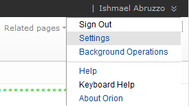
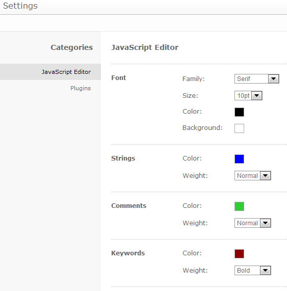
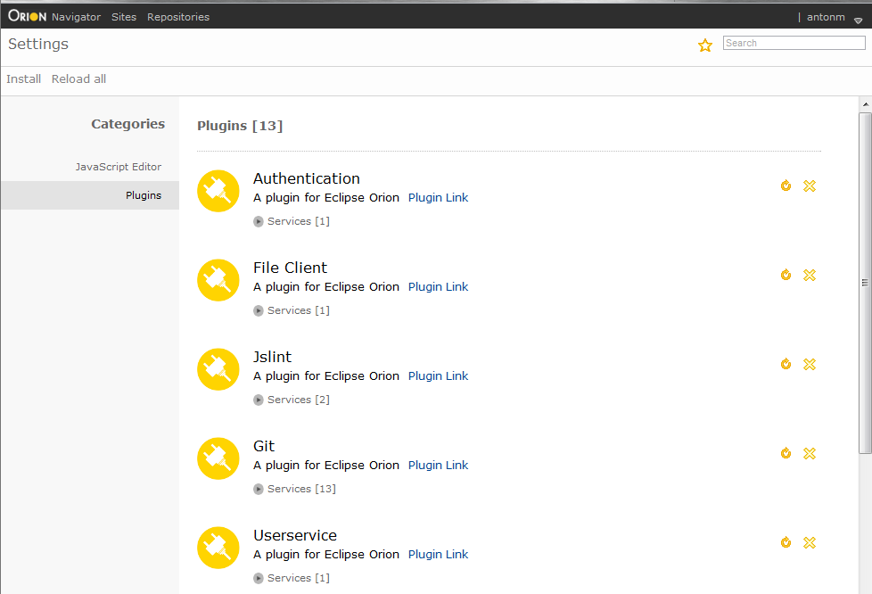
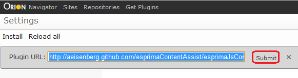
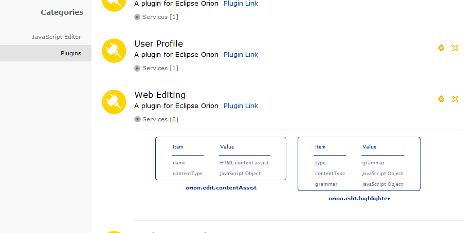

The Settings page allows you to view and configure your Orion experience. Settings modified here affect only your single user account. Access this page by selecting Settings from the drop down menu next to your user name in the top right hand corner of the Orion application.

The Editor Theme category on the Settings page allows you to customize the fonts and colors used by Orion's built in code editor. Changes to these settings take effect immediately, even in editors that are currently open in other tabs.

The Plugins category on the Settings page allows you to view and change the plugins that you have installed. If you are a plugin developer, you can also use this page to browse through the services and properties of installed plugins.

Each plugin entry can be individually reloaded by pressing the curved arrow icon beside the plugin information, and each can be individually removed using the "X" icon. A plugin can also be disabled, which turns off its functionality but leaves its entry in the plugin list. Some plugins are already installed by default, and cannot be removed or disabled.
To install a plugin, click the ' Install 'link at the top left hand corner of the page, where a slide-out will appear to allow you to enter in the URL address of a plugin. Beside that link is a link to reload all the current plugins - sometimes useful for reestablishing default setups.
To find available plugins, you can click Get Plugins in the banner at the top of each Orion page. This will take you to an external catalog of available Orion plugins.
Selecting a plugin to install from that catalog will bring you back to the settings page, with the plugin URL already typed in for you. Confirm that this is the plugin you want to install, and click Submit.

Beneath each plugin entry is a services link. Clicking on that link expands an area to reveal a carousel of service tables:

For plugins with multiple services, the carousel can be used to scroll through them from left to right of the screen. If you are debugging, and a service entry offers 'JavaScript Object' as a value for an item, clicking on that value will open the object up for further traversal in the console window of WebKit and Mozilla browsers.
This document is maintained in a collaborative wiki. If you wish to update or modify this document please visit http://wiki.eclipse.org/Orion/Documentation/User_Guide/Reference/Settings_page